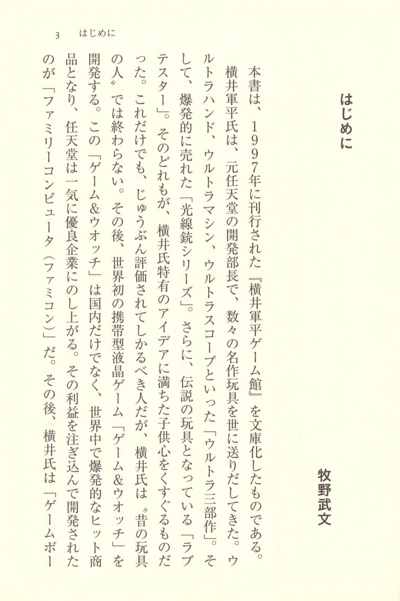
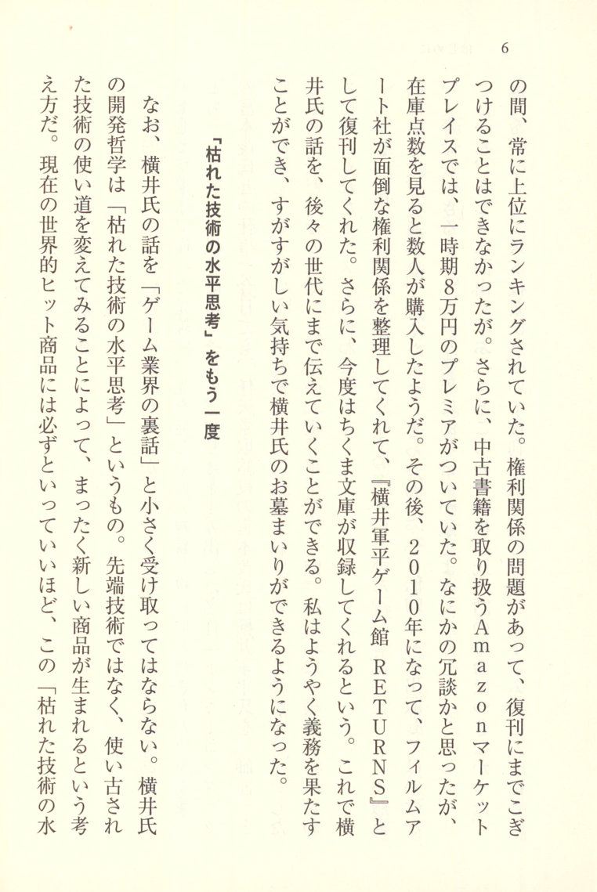
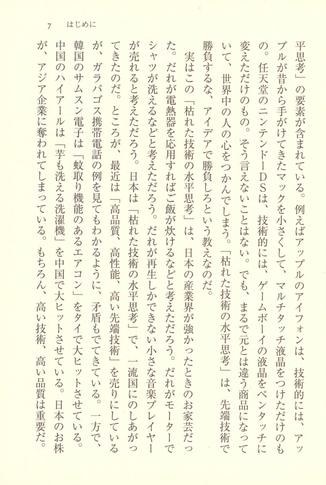
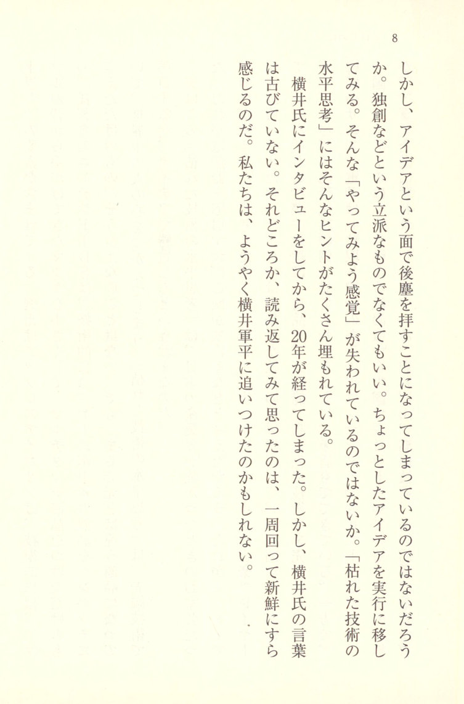
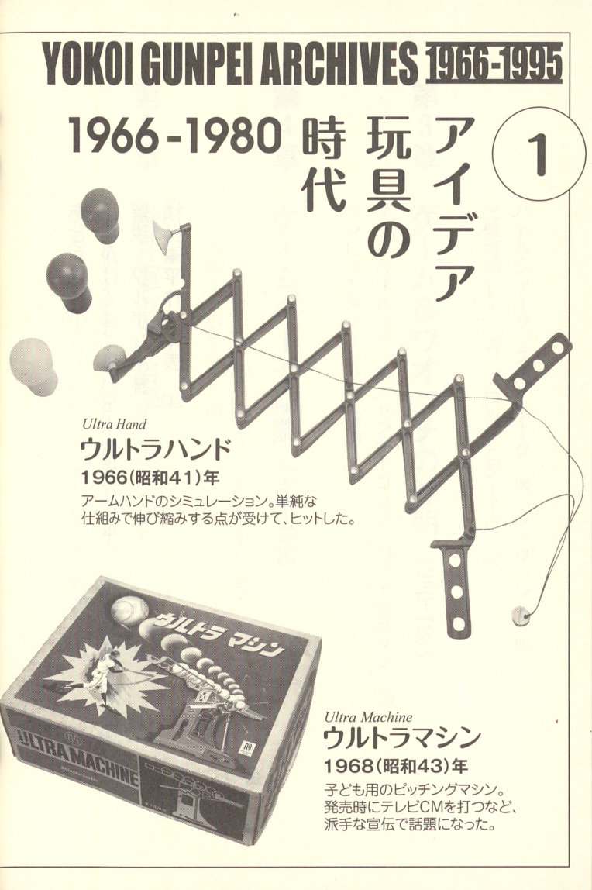
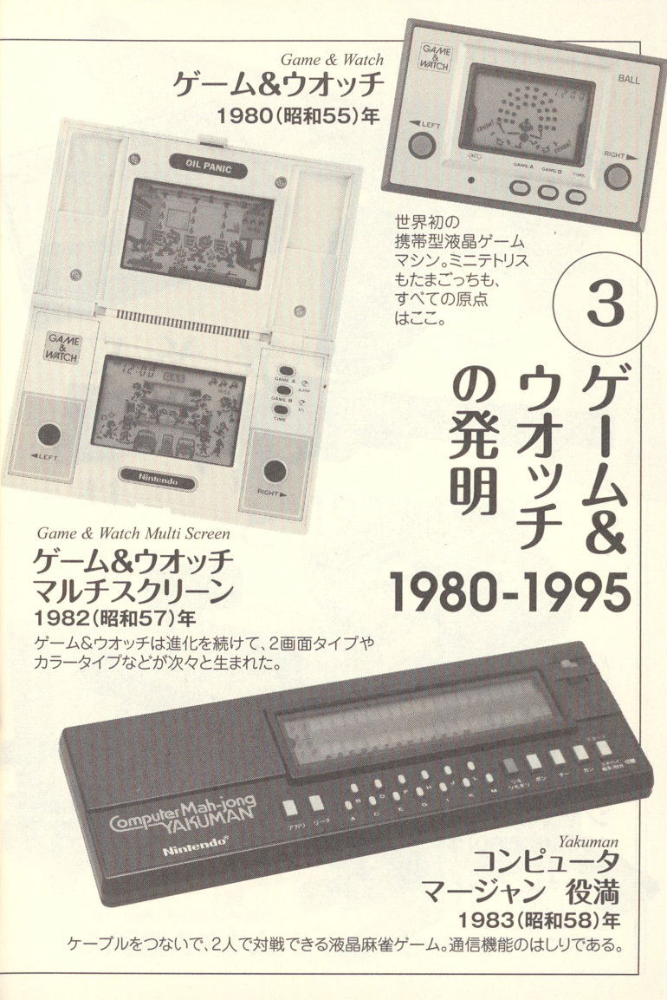
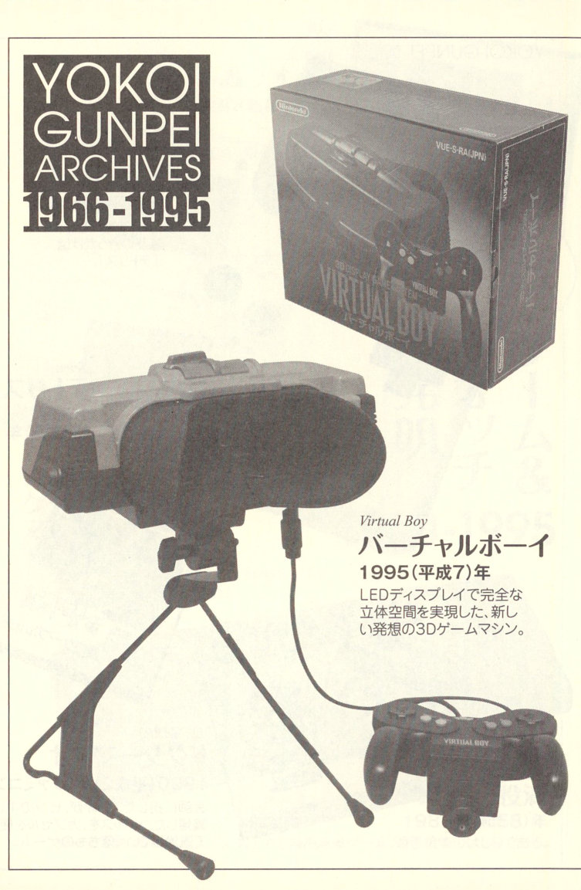

Introduction

Makino Takefumi (牧野武文)
This book is a paperback edition of *Yokoi Gunpei Game Kan*, first published in 1997. Gunpei Yokoi (横井軍平), former head of Nintendo's development division, sent countless celebrated toys out into the world: the Ultra Hand, the Ultra Machine, the Ultra Scope, the Ultra three-part series — and then the legendary toys known as the "Ultra" trilogy. And further, the explosively popular "Light Gun Series." He is also credited as a tester on the massively successful *Love* — but none of that is the end of the story. Yokoi's ideas, brimming with what he himself called "the spirit of a child playing with old toys," gave the world the Game & Watch, Nintendo's first handheld LCD game, which became not merely a domestic hit but an explosive worldwide sensation. Nintendo's profits were poured into the development of what became the Family Computer (Famicom), and Nintendo leapt in one bound to the ranks of the world's leading companies. After that, Yokoi developed the "Game Boy" —
 p.7 a handheld version of Tetris, and Pocket Monsters — creating an environment that produced one megahit after another.
p.7 a handheld version of Tetris, and Pocket Monsters — creating an environment that produced one megahit after another.
What made Yokoi so remarkable was that he was neither purely an analog toys person nor purely a digital person. He was someone who could be active in both worlds simultaneously, and that is precisely what made him so extraordinarily valuable. Looking at him from anywhere in the world, he was the kind of craftsman who could take orders from companies developing computers, and his marketing examples are not to be found anywhere else in the game industry. Everyone, from analog to digital, from net marketing to beyond the valley — the total personnel turnover across the industry kept rising steadily. Yet Yokoi remained undaunted, carrying the melody even as others fell away. The deep valley that had swallowed so many editors of his era — he crossed it with ease, continuing to hold his ground. I heard his story and was immediately captivated. "I want to meet him. I want to hear what he has to say," said Moto Kimura (木村基), an editor who had been based at Ascii at the time — and so, hearing Yokoi speak, I went at once to compile that long interview into what became *Yokoi Gunpei Game Kan*.
 p.8 A Treasury of Tumbling Ideas
p.8 A Treasury of Tumbling Ideas
The contents, as you will understand simply by reading, are a succession of tumbling Wonders — a fat ray gun made from a battery and a light bulb, a ray gun that projects light onto a wall to shoot at the silhouettes of ducks, a ray gun that emits no light. And the magic of light. Today, too, Shigeru Miyamoto, Nintendo's managing director, is the man who gave birth to Mario; and Miyamoto speaks of Yokoi as "Shisho" — "The Master." His celebrated work created together with Miyamoto, *Donkey Kong*, used tombstone designs that Yokoi himself drew specially for *Yokoi Gunpei Game Kan*. That illustration was used for the cover of this book.
However, the fate of *Yokoi Gunpei Game Kan* was unfortunate, to say the least. It could not be called an autobiographical book. Immediately after publication, Yokoi passed away in a traffic accident. The industry has a saying: "Because one's life runs out." There were many things he still ought to have learned; he had much more to give. Yokoi's story had not yet reached its end.
However, at Fukkan Dot Com — a reprint publisher that carries out reprints based on reader requests for revival — Yokoi's story, for a time, could not be found. And yet, based on the large number of revival request votes and the many interesting things still worth learning from Yokoi, Fukkan Dot Com undertook the reprint.

"Withered Technology Lateral Thinking" — Once More
Now, Yokoi's story is known within the game industry as "behind-the-scenes talk about Game & Watch." It must not be taken simply as that. Yokoi's development philosophy is something called "withered technology lateral thinking." It is not about cutting-edge technology; rather, it is about taking technology that has grown old and familiar, and by finding new ways to use it, changing the world. Today's globally successful hit products virtually all, without exception, embody this "withered technology lateral



1966-1980 The Age of Idea Toys **1**
[IMAGE: Photograph of the Ultra Hand, a scissor-mechanism extending arm toy, with balloons shown being gripped at one end]
*Ultra Hand*
Ultra Hand
1966 (Showa 41)
A simulation of a robotic arm. Its simple mechanism that extends and contracts was what made it a hit.
[IMAGE: Photograph of the Ultra Machine product box, showing a pitching machine toy]
*Ultra Machine*
Ultra Machine
1968 (Showa 43)
A pitching machine for children. It became a talking point at the time of its release thanks to a flashy television commercial campaign.
 p.16 [IMAGE: Photograph of the Ten Billion puzzle, a cylindrical transparent container with small balls arranged in a grid pattern inside]
p.16 [IMAGE: Photograph of the Ten Billion puzzle, a cylindrical transparent container with small balls arranged in a grid pattern inside]
*Ten billion*
Ten Billion
1980 (Showa 55)
A three-dimensional puzzle inspired by the Rubik's Cube. The number of possible combinations exceeds ten billion!
[IMAGE: Photograph of the Love Tester device, a handheld electronic meter with two metal ball electrodes on cords]
*Love Tester*
Love Tester
1969 (Showa 44)
Two people hold hands, and one of them grips the terminals with their free hand — and you can tell how deep their love is!?
[IMAGE: Photograph of the Ultra Machine pitching machine toy, showing the Nintendo-branded device up close with balls loaded in the feeder rail]
 p.17 [IMAGE: Photograph of the Light Gun SP, a realistic-looking revolver-style toy gun with a dark barrel and light-colored grip]
p.17 [IMAGE: Photograph of the Light Gun SP, a realistic-looking revolver-style toy gun with a dark barrel and light-colored grip]
*Light Gun SP*
Light Gun SP
1970 (Showa 45)
The Light Gun series that took the world by storm. Targets include roulette, poker, and many more.
2 The Light Gun and Its Family 1970–1985
[IMAGE: Photograph of the Light Gun Custom Lion Set, showing the product box with a cartoon lion mascot, alongside the lion figure on a base and the gun itself]
*Light Gun Custom Lion set*
Light Gun Custom Lion Set
 p.18 [IMAGE: Photograph of the Duck Hunt toy, showing a device with a bird figure on a stand alongside its product box featuring a duck hunting scene and landscape]
p.18 [IMAGE: Photograph of the Duck Hunt toy, showing a device with a bird figure on a stand alongside its product box featuring a duck hunting scene and landscape]
*Duck Hunt*
Duck Hunt
1976 (Showa 51)
A curious game in which you shoot at the image of a bird projected onto a wall with the light gun, and it flutters down and falls.
[IMAGE: Photograph of a rifle-style light gun toy, resembling a lever-action rifle with a dark finish]
[IMAGE: Photograph of the Family Computer Robot Gyro Set, showing the robot unit alongside its product box]
*Family Computer Robot Gyro Set*
Family Computer Robot Gyro Set
1985 (Showa 60)
Control a character on screen and a wireless robot moves in response. An application of light gun technology.

*Game & Watch*
Game & Watch
1980 (Showa 55)
The world's first handheld LCD game machine. The origin of everything from Tetris to Tamagotchi can be traced back here.
3 The Invention of Game & Watch 1980–1995
[IMAGE: Photograph of the Game & Watch Multi Screen unit, showing the dual-screen clamshell design]
*Game & Watch Multi Screen*
Game & Watch Multi Screen
1982 (Showa 57)
Game & Watch continued to evolve, giving rise to dual-screen models, color models, and more in rapid succession.
[IMAGE: Photograph of the Computer Mahjong Yakuman unit, a wide rectangular handheld device with many buttons]
*Yakuman*
Computer Mahjong Yakuman
1983 (Showa 58)
An LCD mahjong game for two players, connected by cable. A forerunner of network communication features.
 p.20 [IMAGE: Photograph of the original Game Boy handheld unit, shown alongside the Game Boy versions of Tetris and Dr. Mario]
p.20 [IMAGE: Photograph of the original Game Boy handheld unit, shown alongside the Game Boy versions of Tetris and Dr. Mario]
*Game Boy*
Game Boy
1989 (Heisei 1)
A masterpiece among game machines. It was Tetris that drove its widespread adoption.
*Tetris*
Tetris
1989 (Heisei 1)
*Dr. MARIO*
Dr. Mario
1990 (Heisei 2) (Famicom)
A falling-piece game in which Mario, disguised as a doctor, uses capsules to eliminate viruses that have multiplied inside a bottle.

*Virtual Boy*
Virtual Boy
1995 (Heisei 7)
A 3D game machine embodying a bold new concept, achieving a fully realized three-dimensional space through an LED display.